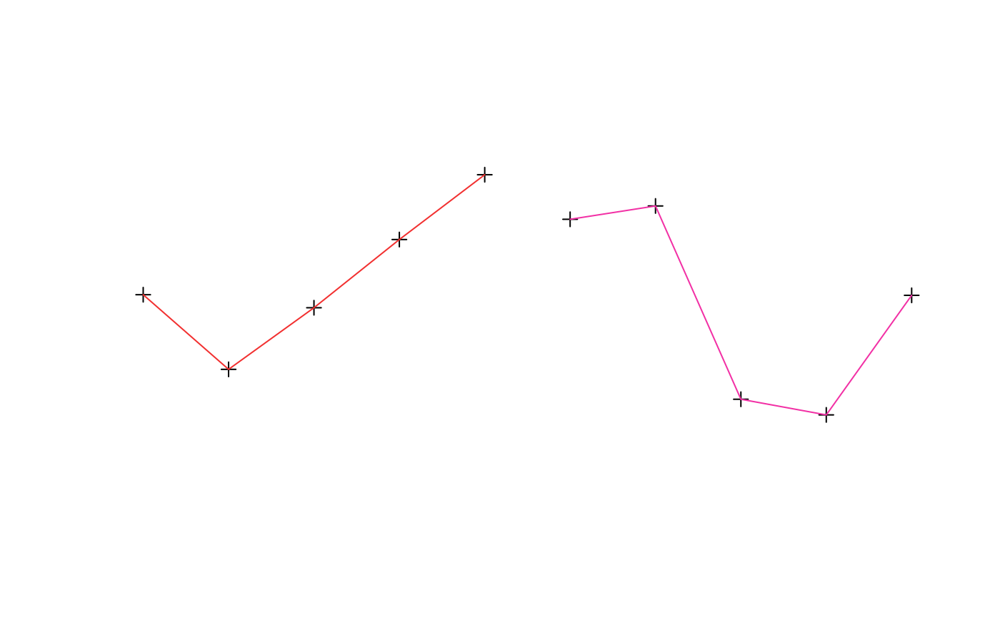
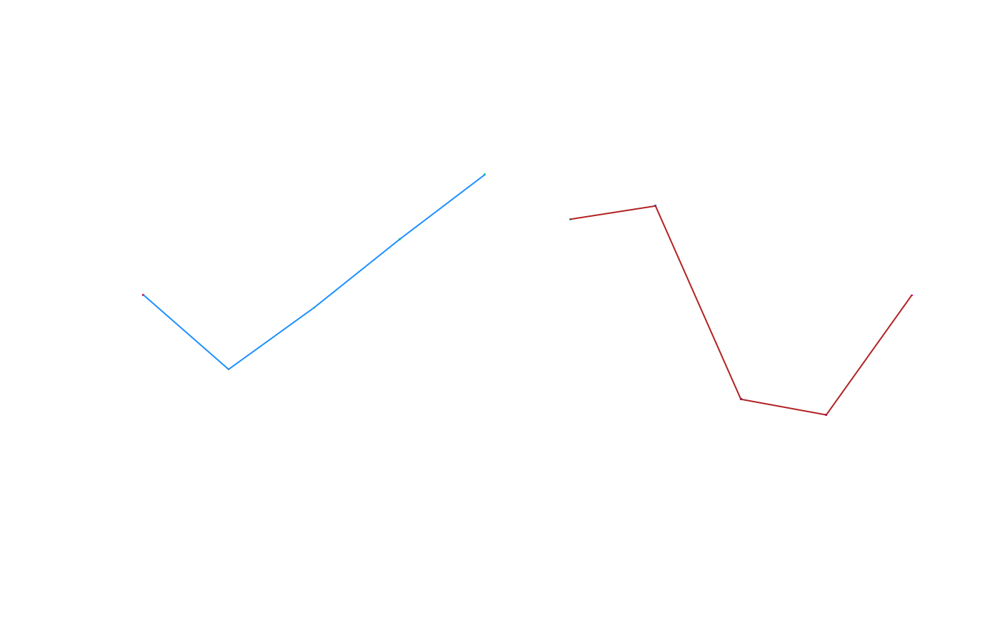
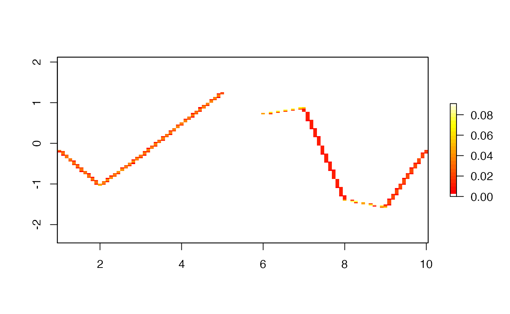
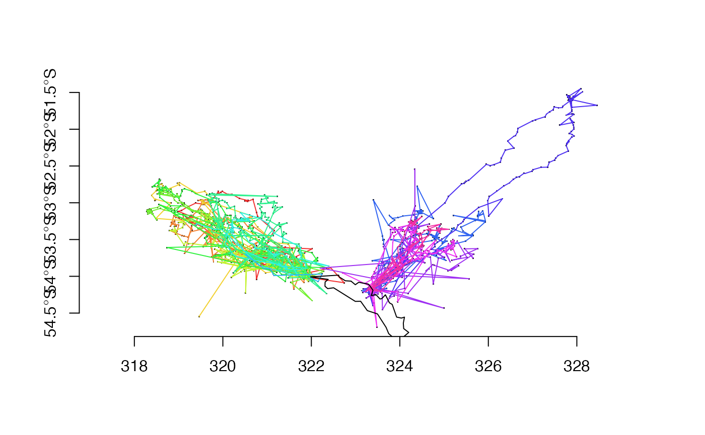
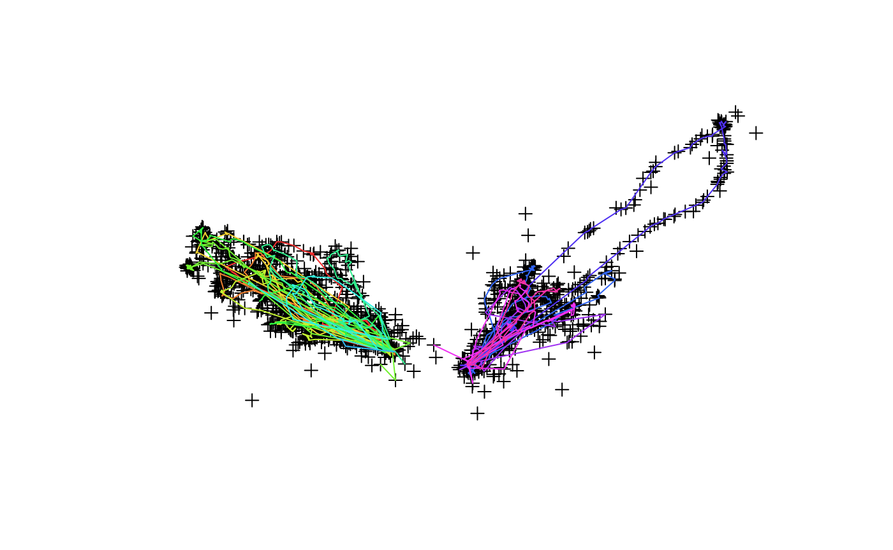
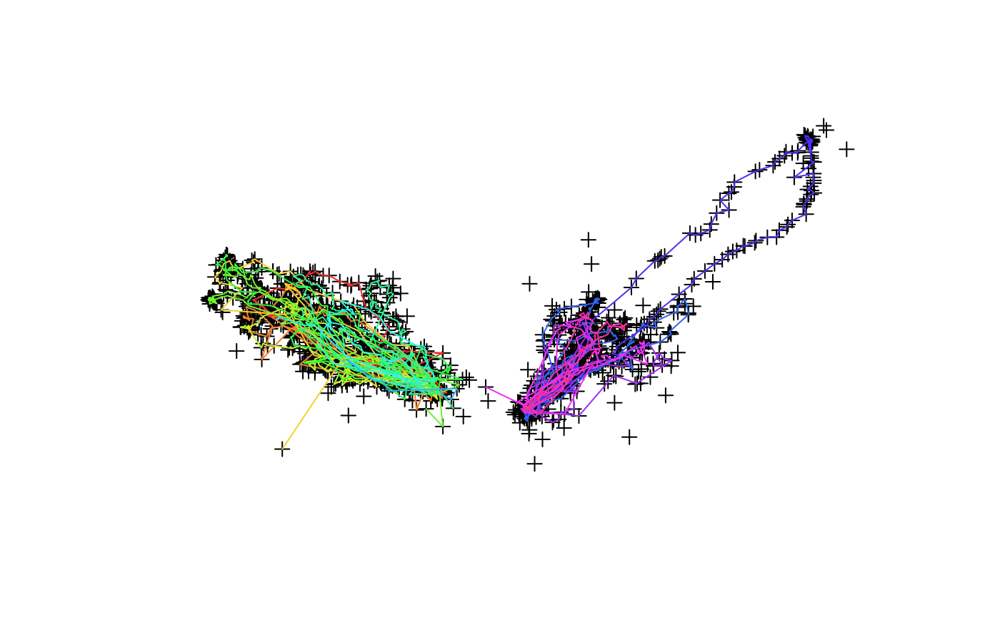
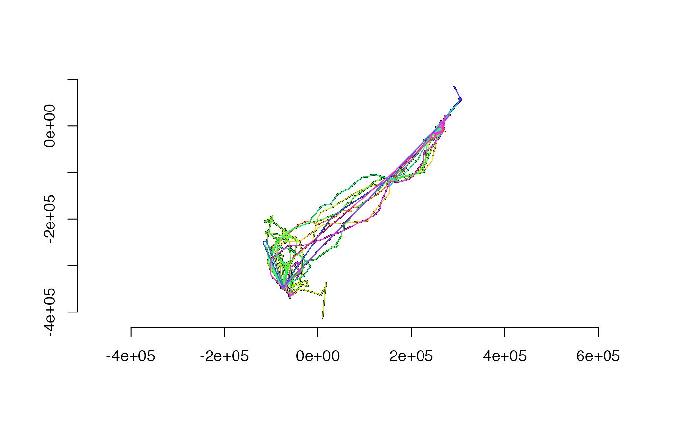

Basic use of the trip package.
Tracking data is in essence a grouped series of one-dimensional data1 records.
It is grouped because we may track more than one object, each with its on independent time sequence.
It is one-dimensional because the topology of the data is a linear stream of values. It makes sense that time is constantly increasing, and it is the primary dimension of the process. (Location is often something that we must estimate, but time is usually directly measured and robust).
Commonly we have records in a data frame, and the primary workflow is to provide the trip() function with information about the spatial locations, the temporal data, and the grouping.
The data may contain any other columns, and in general they can be called anything and be in any order, but the simplest way to create a trip is to put the first four columns as X, Y, date-time, grouping.
## Warning in assume_if_longlat(out): input looks like longitude/latitude data,
## assuming +proj=longlat +datum=WGS84summary(tr)
##
## Object of class trip
## tripID ("id") No.Records startTime ("tms") endTime ("tms") tripDuration
## 1 1 5 2020-06-15 07:31:13 2020-06-15 07:31:17 4 secs
## 2 2 5 2020-06-15 07:31:18 2020-06-15 07:31:22 4 secs
## tripDistance meanSpeed maxSpeed
## 1 783.7201 705348.1 829807.9
## 2 563.0928 506783.6 590145.4
##
## Total trip duration: 8 seconds (0 hours, 8 seconds)
##
## Derived from Spatial data:
##
## Object of class SpatialPointsDataFrame
## Coordinates:
## min max
## x 1.000000 10.000000
## y -1.514667 1.421042
## Is projected: FALSE
## proj4string : [+proj=longlat +datum=WGS84]
## Number of points: 10
## Data attributes:
## tms id
## Min. :2020-06-15 07:31:13 1:5
## 1st Qu.:2020-06-15 07:31:15 2:5
## Median :2020-06-15 07:31:17
## Mean :2020-06-15 07:31:17
## 3rd Qu.:2020-06-15 07:31:19
## Max. :2020-06-15 07:31:22(There may be only one group, but we have to be explicit, with a column that identifies at least one group).
When a print or summary is made the data are presented in terms of their grouping, with some handy summary values. When converting to sf or sp form as lines these summary values are recorded with each “multi”-line.
To plot a trip we use base graphics in the usual ways.

The trip object acts as a sp data frame of points, but with the underlying grouping as lines when that is relevant.

There is a key functionality to determine the time spent in area on a grid, by leveraging the rasterize() generic function in the raster package. Any raster object may be used, so the specification of pixel area, extent and map projection is up to the user. (The trip line segments must all fall within the raster).
tg <- rasterize(tr) plot(tg, col = c("transparent", heat.colors(25)))

As with raster::rasterize() the field used may be chosen, by default the time difference between each point in a trip is used, and the final grid contains the sum of these durations.
There is an older version of this in the tripGrid.interp function that uses approximate methods by allowing interpolation to an ‘equal time’ step.
Service Argos has provide various message formats, and the readArgos() function understands some variants of the ‘PRV’ form. Multiple files can be provided, and all messages will be normalized and turned into a trip object with no need for the user to group or clean them in any way.
argosfile <- system.file("extdata/argos/98feb.dat", package = "trip", mustWork = TRUE) argos <- readArgos(argosfile)
##
## Longitudes contain values greater than 180,
##
##
##
##
## Data fully validated: returning object of class tripsummary(argos)
##
## Object of class trip
## tripID ("ptt") No.Records startTime ("gmt") endTime ("gmt")
## 1 2163 134 1998-02-01 03:32:32 1998-02-24 07:33:35
## 2 6072 150 1998-02-01 03:30:03 1998-02-28 23:16:54
## 3 6073 149 1998-02-03 20:47:38 1998-02-28 23:11:56
## 4 6074 194 1998-02-01 01:51:52 1998-02-28 09:27:23
## 5 6075 160 1998-02-01 17:25:23 1998-02-28 23:17:54
## 6 6076 157 1998-02-01 03:26:28 1998-02-24 07:34:53
## 7 9301 203 1998-02-01 03:33:42 1998-02-28 06:07:30
## 8 9302 87 1998-02-01 05:09:25 1998-02-26 16:10:40
## 9 9303 12 1998-02-01 01:07:29 1998-02-06 09:12:07
## 10 9373 207 1998-02-01 01:51:09 1998-02-24 07:36:01
## 11 9374 191 1998-02-02 15:34:44 1998-02-28 21:36:10
## 12 9375 109 1998-02-01 01:50:39 1998-02-27 03:48:20
## 13 9376 136 1998-02-01 17:26:47 1998-02-22 16:59:45
## 14 9377 115 1998-02-02 07:17:31 1998-02-22 23:48:03
## tripDuration tripDistance meanSpeed maxSpeed
## 1 23.1674 days 1865.7487 6.441413 38.003719
## 2 27.8242 days 1894.6721 6.128032 145.251489
## 3 25.10021 days 1825.6069 6.004080 178.192971
## 4 27.31633 days 2241.5163 12.318890 577.145877
## 5 27.2448 days 1730.3140 114.630616 17393.145193
## 6 23.17251 days 2277.5287 8.759922 158.324144
## 7 27.10681 days 3107.6614 42.621290 6649.062042
## 8 25.4592 days 1034.6549 3.079610 24.671973
## 9 5.336551 days 160.2035 2.563500 7.675708
## 10 23.23949 days 2370.2940 165.640436 32335.751235
## 11 26.251 days 1863.8627 89.308060 15503.634403
## 12 26.08172 days 2531.4993 14.742137 502.168226
## 13 20.98123 days 1521.9433 5.339746 47.063667
## 14 20.68787 days 1164.6709 4.730864 49.179020
##
## Total trip duration: 28422949 seconds (7895 hours, 949 seconds)
##
## Derived from Spatial data:
##
## Object of class SpatialPointsDataFrame
## Coordinates:
## min max
## longitude 318.281 328.453
## latitude -54.689 -51.449
## Is projected: FALSE
## proj4string : [+proj=longlat +datum=WGS84]
## Number of points: 2004
## Data attributes:
## prognum ptt nlines nsensor satname class
## Min. :920 Min. :2163 Min. : 2.000 Min. : 1.00 D:1001 Z: 0
## 1st Qu.:920 1st Qu.:6074 1st Qu.: 3.000 1st Qu.:32.00 J:1003 B:403
## Median :920 Median :9301 Median : 4.000 Median :32.00 A:376
## Mean :920 Mean :7547 Mean : 4.428 Mean :29.93 0:704
## 3rd Qu.:920 3rd Qu.:9374 3rd Qu.: 5.000 3rd Qu.:32.00 1:420
## Max. :920 Max. :9377 Max. :58.000 Max. :32.00 2: 83
## 3: 18
## date time altitude transfreq
## Length:2004 Length:2004 Min. :0 Min. :401648599
## Class :character Class :character 1st Qu.:0 1st Qu.:401649265
## Mode :character Mode :character Median :0 Median :401649474
## Mean :0 Mean :401649505
## 3rd Qu.:0 3rd Qu.:401649747
## Max. :0 Max. :401650517
##
## gmt
## Min. :1998-02-01 01:07:29
## 1st Qu.:1998-02-07 16:19:52
## Median :1998-02-13 04:40:36
## Mean :1998-02-13 20:18:48
## 3rd Qu.:1998-02-20 07:48:41
## Max. :1998-02-28 23:17:54
## Note that the form of the coordinates is native to the PRV file, and in this case contains longitude values that are greater than 180. Some forms of these files provide wrapped forms, but in general the data are read as-is.
(We need “world2” because we are at 40W, but +360).

There are some classic data filters based on speed and angle, and we may chain these together for some cheap improvements to track data, or use them separately.
argos$spd <- speedfilter(argos, max.speed = 4) ## km/h mean(argos$spd) ## more than 5% are too fast
## [1] 0.748503
argos$sda <- sda(argos, smax = 12) ## defaults based on argosfilter, Freitas et al. (2008) mean(argos$sda)
## [1] 0.8687625
Data may be stored in longitude latitude or using a map projection, an in-built data set uses the Azimuthal Equidistant family near the anti-meridian in the Bering Strait.
raster::projection(walrus818)
## Warning in proj4string(x): CRS object has comment, which is lost in output## [1] "+proj=aeqd +lat_0=70 +lon_0=-170 +x_0=0 +y_0=0 +datum=WGS84 +units=m +no_defs"
data("world_north", package= "trip") p <- par(mar = rep(0.5, 4)) plot(raster::extent(walrus818) + 600000) plot(walrus818, pch = ".", add = TRUE) plot(world_north, add = TRUE, col = "grey") lines(walrus818)
par(p)
There are various conversions from other tracking data types, the trip() function aims to be a helpful function like raster::raster(), simply understanding many formats.
It’s possible to export trips to Google Earth, for interacting with the time slider in continuous time. Use write_track_kml() to produce a ‘KML/KMZ’ file.
When converting to spatial forms we may choose multi-lines, points, or segments.
Conversion to points, in sp or spatstat.
## as points as(walrus818, "SpatialPointsDataFrame")
## class : SpatialPointsDataFrame
## features : 10558
## extent : -117277, 307789, -412557, 84896 (xmin, xmax, ymin, ymax)## Warning in proj4string(x): CRS object has comment, which is lost in output## crs : +proj=aeqd +lat_0=70 +lon_0=-170 +x_0=0 +y_0=0 +datum=WGS84 +units=m +no_defs
## variables : 4
## names : Deployment, DataDT, Wet, Forage
## min values : 353, 1252987200, 0, 0
## max values : 444, 1287601200, 1, 1as(walrus818, "ppp")
## Marked planar point pattern: 10558 points
## Mark variables: Deployment, DataDT, Wet, Forage
## window: rectangle = [-117277, 307789] x [-412557, 84896] unitsConversion to lines, in sp, sf, or adehabitatLT.
## as lines as(walrus818, "SpatialLinesDataFrame")
## class : SpatialLinesDataFrame
## features : 14
## extent : -117277, 307789, -412557, 84896 (xmin, xmax, ymin, ymax)
## crs : +proj=aeqd +lat_0=70 +lon_0=-170 +x_0=0 +y_0=0 +datum=WGS84 +units=m +no_defs
## variables : 4
## names : tripID, tripStart, tripEnd, tripDur
## min values : 353, 1252987200, 1254337200, 1195200
## max values : 444, 1283878800, 1287601200, 5695200class(as(walrus818, "sf"))
## Warning in sp::proj4string(from): CRS object has comment, which is lost in
## output## [1] "sf" "data.frame"class(as(walrus818, "sf")$geom)
## Warning in sp::proj4string(from): CRS object has comment, which is lost in
## output## [1] "sfc_LINESTRING" "sfc"as(walrus818, "ltraj")
## Loading required namespace: adehabitatLT## Registered S3 methods overwritten by 'adehabitatMA':
## method from
## print.SpatialPixelsDataFrame sp
## print.SpatialPixels sp##
## *********** List of class ltraj ***********
##
## Type of the traject: Type II (time recorded)
## * Time zone: GMT *
## Irregular traject. Variable time lag between two locs
##
## Characteristics of the bursts:
## id burst nb.reloc NAs date.begin date.end
## 1 353 353 160 0 2009-09-15 04:00:00 2009-09-30 19:00:00
## 2 354 354 813 0 2009-09-16 04:00:00 2009-10-20 00:00:00
## 3 355 355 1151 0 2009-09-16 04:00:00 2009-11-04 19:00:00
## 4 356 356 1534 0 2009-09-16 23:00:00 2009-11-21 21:00:00
## 5 357 357 1274 0 2009-09-16 23:00:00 2009-11-09 22:00:00
## 6 358 358 596 0 2009-09-16 23:00:00 2009-10-18 19:00:00
## 7 359 359 1053 0 2009-09-16 23:00:00 2009-10-30 19:00:00
## 8 361 361 556 0 2009-09-17 01:00:00 2009-11-06 04:00:00
## 9 362 362 301 0 2009-09-17 01:00:00 2009-10-03 17:00:00
## 10 366 366 405 0 2009-09-19 15:00:00 2009-10-12 20:00:00
## 11 367 367 1172 0 2009-09-17 01:00:00 2009-11-10 16:00:00
## 12 368 368 151 0 2009-09-19 02:00:00 2009-10-02 22:00:00
## 13 443 443 1035 0 2010-09-07 17:00:00 2010-10-20 19:00:00
## 14 444 444 357 0 2010-09-07 17:00:00 2010-09-28 05:00:00
##
##
## infolocs provided. The following variables are available:
## [1] "pkey"Conversions to segments, in sp, spatstat.
## as segments explode(walrus818)
## class : SpatialLinesDataFrame
## features : 10544
## extent : -117277, 307789, -412557, 84896 (xmin, xmax, ymin, ymax)
## crs : +proj=aeqd +lat_0=70 +lon_0=-170 +x_0=0 +y_0=0 +datum=WGS84 +units=m +no_defs
## variables : 4
## names : starttime, endtime, timedur, id
## min values : 1252987200, 1252990800, 3600, 353
## max values : 1287597600, 1287601200, 2152800, 444as(walrus818, "psp")
## marked planar line segment pattern: 10544 line segments
## Mark variables: origMarks, pattern
## window: rectangle = [-117277, 307789] x [-412557, 84896] unitsThe trip package cops a bit of dismissive criticism because it’s based on sp which is somehow seen as hopelessly legacy. Trip uses sp in powerful ways, but the greatest power is
There’s some excitement about the new sf package, and some moves to write yet another trajectory formalism based on sf. I would never use it, sf is a non starter for track data. If these things change I would reconsider, but I don’t see that happening as sf is extremely brittle now, also these suggestions were made early and ignored.
Trip has a lot of problems, but these basic things are just no-go. It’s been said trip is only point-based, but the time-spent gridding, the speed filtering, and the conversion to line segments is all clearly line-based. I’m still looking for sensible collaboration for a better system in R, but to me it’s as simple as a grouped data frame with dplyr/ggplot2 semantics. Anything more requires a multi-table system and shoe-horning into the sf straitjacket is not going to work.
See vignette ‘trip-rationale’ for a longer version.
One-dimensional, are you crazy? Yes, the measurement process is one-dimensional and that is how we can arrange the primary data we collect. We collect location (x, y, z), time, and many other variables such as temperature, air pressure, happiness and colour, these are the geometry of our measurements, but the collection itself is very much a one-dimensional topology.↩︎